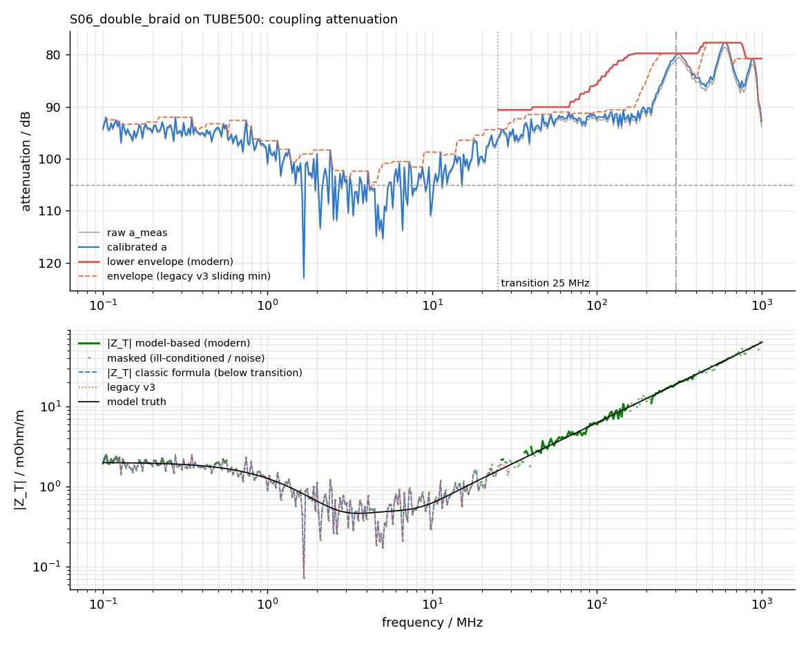

shieldeval
Reconstructs a legacy-style cable-shielding tool from its outputs bit-for-bit, then modernises it.
The problem
Every engineering department has one: a decades-old tool that everyone depends on and no one fully understands. Its numbers are written into specifications and archived test reports. You cannot fix it, because "fixed" means "different", and different invalidates history. You cannot leave it, because its approximations are wrong for the fixtures you use now.
This project is the disciplined way out, demonstrated on a shield-evaluation tool: transfer impedance and screening attenuation from triaxial and line-injection measurements.
What was built
Not one implementation but two, plus the bridge between them — so history stays reproducible while the future stops inheriting the past's approximations.
Takes
- Archived raw measurement and calibration files (.dat / .cal)
- The archived v3 results, as the ground truth for compatibility
- Fixture profiles: tube-in-tube, line injection, connectors
Produces
- Transfer impedance Z_T and screening attenuation a_S — by both methods
- Byte-identical legacy output on demand, forever
- A quantified legacy-to-modern difference per fixture and frequency
- Class limits evaluation with margins
The hard part
Byte-identical is a merciless target. It is not enough to implement the right physics — you must implement the wrong physics precisely: the legacy tool's fixed-point rounding, its off-by-one frequency indexing, its hard-coded fixture constant, its habit of clamping a noise floor before rather than after averaging. Each quirk is isolated in a register, Q1 to Q9, with a test — so the compatibility mode is not a fork frozen in amber but a documented, maintainable statement of what the old tool did.
Honesty note, stated on the repository and in the report: the real legacy program was not available. The stand-in was written for this project in the style of a 2016 script, with realistic quirks, and the archive was generated from known shield physics. The method — characterise, reproduce exactly, modernise beside it, quantify the difference — is the deliverable, and it transfers unchanged to a real legacy tool.
Checked against ground truth
Two different kinds of proof, one per implementation.
| What was checked | Result |
|---|---|
| Compatibility mode vs the archived v3 results | 6 / 6 byte-identical |
| Each quirk Q1–Q9 disabled individually | output diverges — every quirk demonstrably load-bearing |
| Modern method vs analytic single-braid physics | agrees across the band |
| Legacy vs modern difference | reported per fixture, per frequency — the migration cost, quantified |


What it does not claim
From the report's own limitations section:
- The legacy tool is a constructed stand-in; the equivalence proof is real, its target is synthetic.
- Shield physics is analytic (braid and foil models), not full-wave electromagnetic simulation.
- Uncertainty is budgeted for the modern method only — the legacy method never stated one, which is part of the point.
Where it sits in the toolchain
Deliberately independent: it shares no code path with the measurement chain, because shield evaluation is a different instrument setup answering a different question. What it shares is the toolchain's discipline — versioned methods, quantified differences, declared limitations — and its version number, v4.0.0, continues the legacy tool's own lineage so that any result can be attributed to a named method version rather than to "the old script".